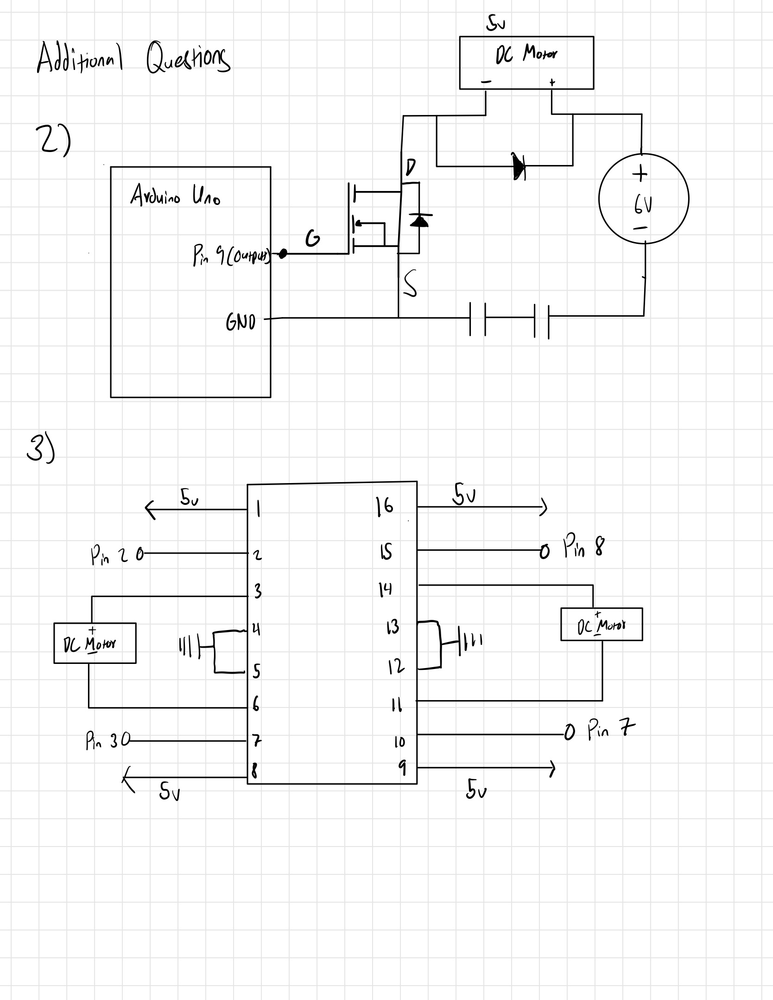
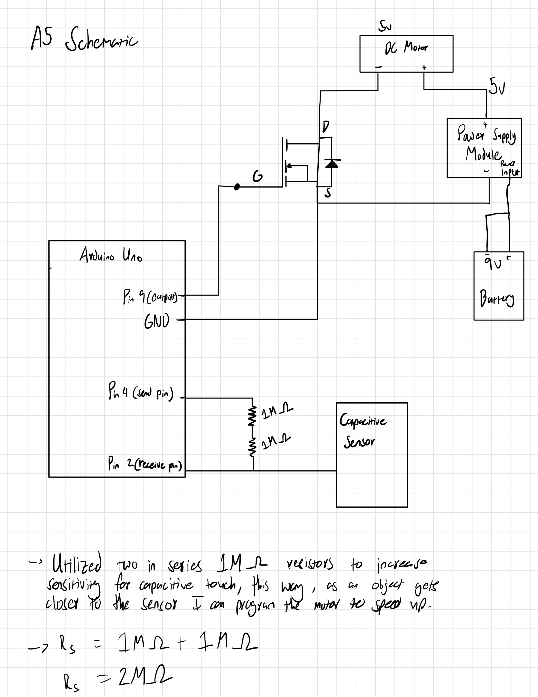
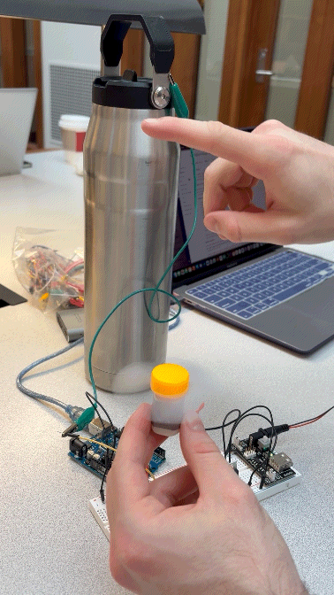
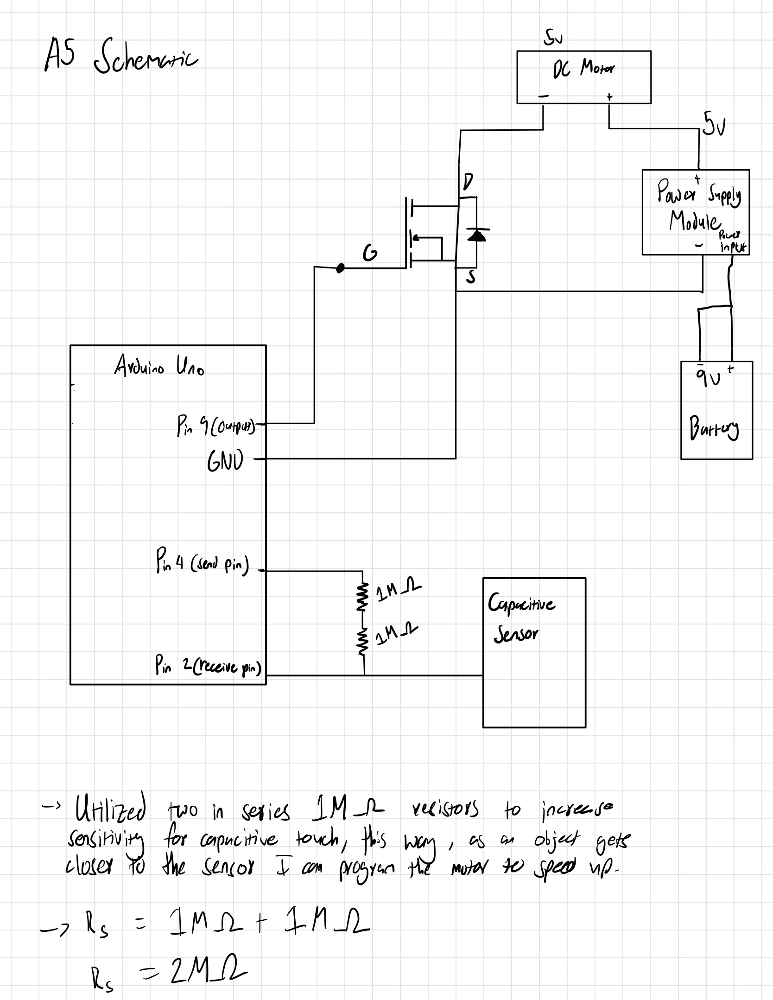
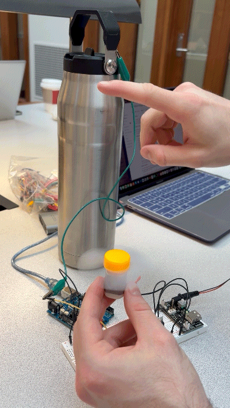

Keyvyn Rogers Assignment 5
#include //Importing capacitive sensor library
// Defining capacitive sensor
CapacitiveSensor cs_4_2 = CapacitiveSensor(4, 2);
int motor_pin = 9;
void setup() {
// Initalizing serial communication (used for slecting values)
Serial.begin(9600);
//Initalizing pin 9
pinMode(motor_pin, OUTPUT);
}
void loop() {
// Read capacitive sensor value
// This value is for taking samples, a higher sample
// is for greater accuracy, but in this context
long touch_val = cs_4_2.capacitiveSensor(40);
//constraining values to be between 0 and 500
int adj_val = constrain(touch_val, 0, 1000);
// mapping touch values to speed of the motor
// 200 was the highest value I was reading before I would touch the sensor
int speed = map(adj_val, 0, 200, 0, 255);
// Writing the speed to the motor
analogWrite(motor_pin, speed);
}

Links for Question 2:
3-6V DC Motor
6V Battery
Transistor
Flyback diode datasheet
Capacitor Datasheet
Pseudo code for question 3:
// DC Motor A
// Setup()
Initialize pins 3, 6, 14, 11 as OUTPUT
Set all pins LOW initially
// Loop()
// Both forward
Set 3=HIGH,6=LOW
Set 14=HIGH,11=LOW
Delay 1000ms
// Both backward
Set 3=LOW,6=HIGH // Motor A backward
Set 14=LOW,11=HIGH // Motor B backward
Delay 1000ms
// Left forward, Right backward
Set 3=HIGH,6=LOW
Set 14=LOW,11=HIGH
Delay 1000ms
// Left backward, Right forward
Set 3=LOW,6=HIGH
Set 14=HIGH,11=LOW
Delay 1000ms
 


